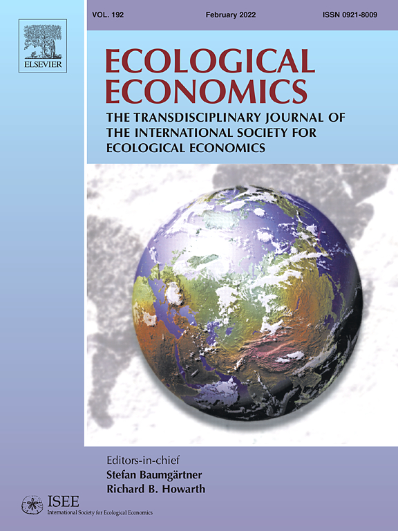
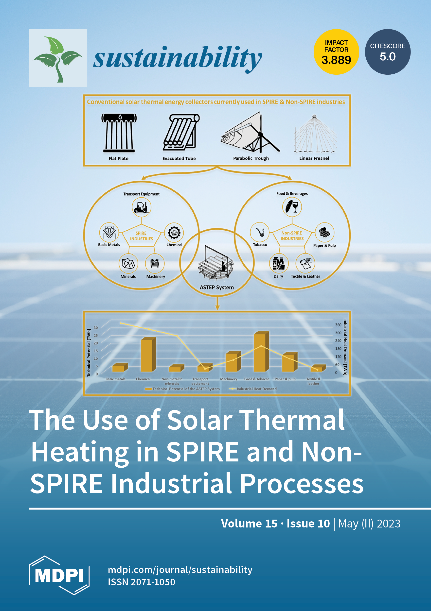
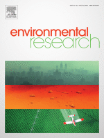

Peer reviewed publications
Refueling a Quiet Fire: Old Truthers and New Discontent in the Wake of COVID-19
Authors: Beccari Gabriele, Giaccherini Matilde, Kopinska Joanna, Rovigatti Gabriele.
Journal: (2024) Demography, 61(5), 1613-1636
DOI: https://doi.org/10.1215/00703370-11587755
Abstract
This article investigates the factors that contributed to the proliferation of online COVID skepticism on Twitter across Italian municipalities in 2020. We demonstrate that sociodemographic factors were likely to mitigate the emergence of skepticism, whereas populist political leanings were more likely to foster it. Furthermore, pre-COVID anti-vaccine sentiment, represented by “old truthers” on Twitter, amplified online COVID skepticism in local communities. Additionally, exploiting the spatial variation in restrictive economic policies with severe implications for suspended workers in nonessential economic sectors, we find that COVID skepticism spreads more in municipalities significantly affected by the economic lockdown. Finally, the diffusion of COVID skepticism is positively associated with COVID vaccine hesitancy.
Cite
Beccari, G., Giaccherini, M., Kopinska, J., Rovigatti, G. (2024). Refueling a Quiet Fire: Old Truthers and New Discontent in the Wake of COVID-19. Demography, 61(5), 1613-1636. Doi: https://doi.org/10.1215/00703370-11587755.
Particulate matter and Covid-19 excess deaths: Decomposing long-term exposure and short-term effects

Authors: Becchetti Leonardo, Beccari Gabriele, Conzo Gianluigi, Conzo Pierluigi, De Santis Davide, and Salustri Francesco.
Journal: (2022) Ecological Economics, 194
DOI: https://doi.org/10.1016/j.ecolecon.2022.107340
Abstract
We investigate the time-varying effect of particulate matter (\(PM\)) on COVID-19 deaths in Italian municipalities. We find that the lagged moving averages of \(PM_{2.5}\) and \(PM_{10}\) are significantly related to higher excess deceases during the first wave of the disease, after controlling, among other factors, for time-varying mobility, regional and municipality fixed effects, the nonlinear contagion trend, and lockdown effects. Our findings are confirmed after accounting for potential endogeneity, heterogeneous pandemic dynamics, and spatial correlation through pooled and fixed-effect instrumental variable estimates using municipal and provincial data. In addition, we decompose the overall \(PM\) effect and find that both pre-COVID long-term exposure and short-term variation during the pandemic matter. In terms of magnitude, we observe that a 1 \(\mu g/m^{3}\) increase in \(PM_{2.5}\) can lead to up to 20% more deaths in Italian municipalities, which is equivalent to a 5.9% increase in mortality rate.
Cite
Becchetti, L., Beccari, G., Conzo, G., Conzo, P., De Santis, D., and Salustri, F. (2022). Particulate matter and Covid-19 excess deaths: Decomposing long-term exposure and short-term effects. Ecological Economics, 194. Doi: https://doi.org/10.1016/j.ecolecon.2022.107340
The Green Lung: National Parks and Air Quality in Italian Municipalities

Authors: Becchetti Leonardo, Beccari Gabriele, Conzo Gianluigi, Conzo Pierluigi, De Santis Davide, and Salustri Francesco.
Journal: (2023) Sustainability, 15(10), 7802
DOI: https://doi.org/10.3390/su15107802
Abstract
In Italy, 25 percent of the 7903 municipalities include protected areas, while 6.4 percent—which we define as park municipalities—are national parks. Using data from the Copernicus programme databases, we investigated the relationship between park municipalities and the air quality, and we found that the air pollution levels in these areas were much lower than in the rest of the municipalities for the period 2017–2020. The gross difference ranged from 25 to 30 percent lower levels of particulate matter (as measured in terms of both \(PM_{10}\) and \(PM_{2.5}\)), and three times lower levels of nitrogen dioxide. In our multivariate econometric analysis, we found that part of this difference depends on the lower population density and manufacturing activity in municipalities with national parks. Furthermore, we showed that park municipalities: (i) had progressively reduced levels of particulate matter during the period 2017–2020, and (ii) had a “green lung” function, since in non-park municipalities’ air pollution levels increased with the distance from national parks. Based on empirical evidence on the impact of the main air pollutants on mortality documented in the literature, we calculated that living in park municipalities reduces mortality rates by around 10 percent.
Cite
Becchetti, L., Beccari, G., Conzo, G., De Santis, D., Conzo, P., and Salustri, F. (2023). The Green Lung: National Parks and Air Quality in Italian Municipalities. Sustainability, 15(10), 7802. Doi: https://doi.org/10.3390/su15107802
Air quality and COVID-19 adverse outcomes: divergent views and experimental findings

Authors: Becchetti Leonardo, Beccari Gabriele, Conzo Gianluigi, Conzo Pierluigi, De Santis Davide, and Salustri Francesco.
Journal: (2021) Environmental Research, 193, 110556
DOI: https://doi.org/10.1016/j.envres.2020.110556
Abstract
Background
The questioned link between air pollution and coronavirus disease 2019 (COVID-19) spreading or related mortality represents a hot topic that has immediately been regarded in the light of divergent views. A first “school of thought” advocates that what matters are only standard epidemiological variables (i.e. frequency of interactions in proportion of the viral charge). A second school of thought argues that co-factors such as quality of air play an important role too.
Methods
We analyzed available literature concerning the link between air quality, as measured by different pollutants and a number of COVID-19 outcomes, such as number of positive cases, deaths, and excess mortality rates. We reviewed several studies conducted worldwide and discussing many different methodological approaches aimed at investigating causality associations.
Results
Our paper reviewed the most recent empirical researches documenting the existence of a huge evidence produced worldwide concerning the role played by air pollution on health in general and on COVID-19 outcomes in particular. These results support both research hypotheses, i.e. long-term exposure effects and short-term consequences (including the hypothesis of particulate matter acting as viral “carrier”) according to the two schools of thought, respectively.
Conclusions
The link between air pollution and COVID-19 outcomes is strong and robust as resulting from many different research methodologies. Policy implications should be drawn from a “rational” assessment of these findings as “not taking any action” represents an action itself.
Cite
Becchetti, L., Beccari, G., Conzo, G., Conzo, P., De Santis, D., and Salustri, F. (2021). Air quality and COVID-19 adverse outcomes: divergent views and experimental findings. Environmental Research, 193, 110556. Doi: https://doi.org/10.1016/j.envres.2020.110556